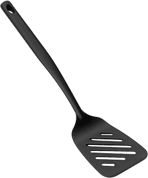
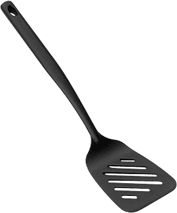

Итальянская посуда
для итальянского настроения
Это молодой бренд, идея которого родилась у одаренного итальянского дизайнера кухонной мебели, когда он трудился над созданием очередного креативного решения для мебельного каталога.
Как часто бывает, жизнь преподнесла дизайнеру сюрприз, одним из заказчиков, с которым он лично общался, оказался владелец небольшого предприятия по изготовлению посуды. Его впечатлили эскизы, и на их основе была придумана первая серия дизайнерской посуды.
Чтобы убедиться, что «дух прекрасного» сохранился при превращении идеи в технологичные высококачественные кастрюли и сковородки, дизайнер тестировал все продукты лично, и так увлекся, что сменил профессию, став кулинаром. Вначале, конечно, его специализацией была итальянская кухня, но спустя некоторое время он уехал из Италии, чтобы продолжить теперь уже интернациональную карьеру шеф-повара.
В 2017 г. посуда Verloni впервые появилась в России и сразу влюбила в себя множество семей, ведь яркость цветов и итальянский шарм отлично сочетаются с русским гостеприимством и хлебосольством.
Италия на любой вкус на вашей кухне.
Коллекции
 

Посуда с глубокими стенками, особенно удобна для приготовления рыбных блюд, которые требуют быстрого нагрева для сохранения нюансов вкуса.
Посуда с глубокими стенками, особенно удобна для приготовления рыбных блюд, которые требуют быстрого нагрева для сохранения нюансов вкуса.
Посуда с глубокими стенками, особенно удобна для приготовления рыбных блюд, которые требуют быстрого нагрева для сохранения нюансов вкуса.
Посуда с глубокими стенками, особенно удобна для приготовления рыбных блюд, которые требуют быстрого нагрева для сохранения нюансов вкуса.
Посуда с глубокими стенками, особенно удобна для приготовления рыбных блюд, которые требуют быстрого нагрева для сохранения нюансов вкуса.
Посуда с глубокими стенками, особенно удобна для приготовления рыбных блюд, которые требуют быстрого нагрева для сохранения нюансов вкуса.
Посуда с глубокими стенками, особенно удобна для приготовления рыбных блюд, которые требуют быстрого нагрева для сохранения нюансов вкуса.
Посуда с глубокими стенками, особенно удобна для приготовления рыбных блюд, которые требуют быстрого нагрева для сохранения нюансов вкуса.
Посуда с глубокими стенками, особенно удобна для приготовления рыбных блюд, которые требуют быстрого нагрева для сохранения нюансов вкуса.
Проверено
на наших кухнях
Посуда Verloni прошла проверку российских шеф-поваров, чьи блюда поражают своей оригинальностью. Теперь ваша очередь поразить близких!